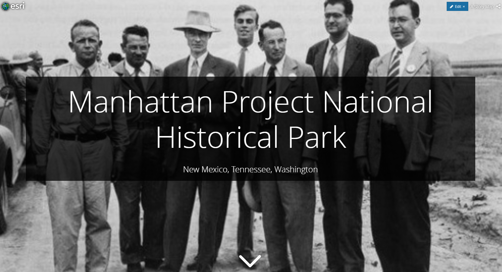
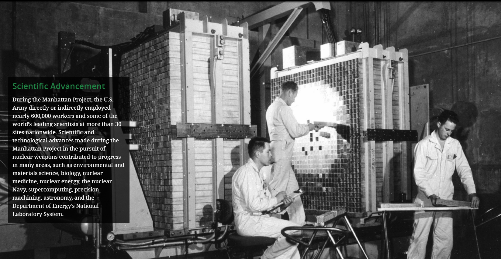

Manhattan Project Storymaps
I completed this project as a volunteer for the National Park Service. For each national park, the NPS is creating new websites to feature each park’s unique characteristics, historical significance, and tour options. Another CU Denver student and I were tasked with making such a website for the Manhattan Project National Historic Park.
UX Challenges:
The National Park Service chose to use an ESRI CMS for their story maps (ESRI is the international leader in GIS products). This both simplified the production process and limited creativity. Three separate park locations constitute The Manhattan Project National Park. We had to represent all three locations equally. The Manhattan Project is also a unique park to discuss as it both represents huge feats in scientific accomplishment and devastating losses of life to other nations. The copy we wrote and pictures we included needed to respect both throughout the map.
UX Solutions:
We chose templates and interactive maps that could show the three parks in tandem. We also wrote copy that could highlight similarities between the parks, including similar tour options. For our “significance statements” and “interpretive themes”, we carefully examined the after-effects of this historic park with reverence. To visually convey this, we used a darker theme and included photos that struck awe.
